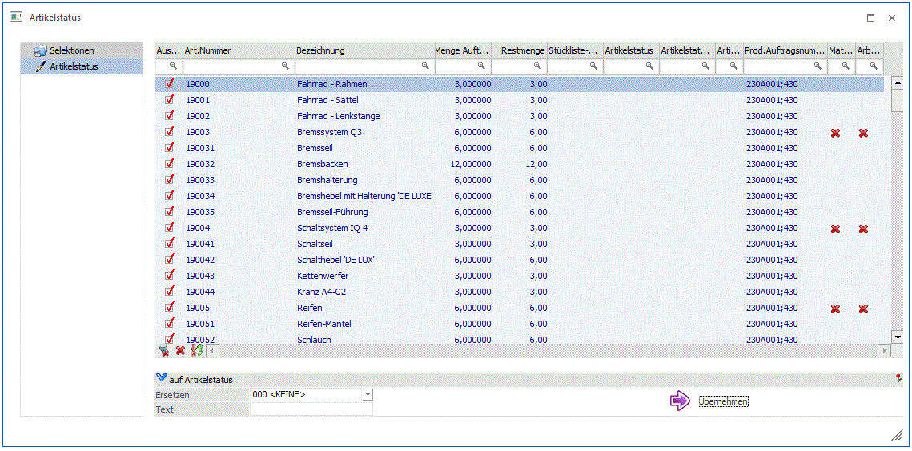

Im diesem Schritt kann der Artikelstatus bzw. die Stücklisten-Kategorie bei den in der Tabelle vorhandenen Stücklistenkomponenten auswerten und auch bearbeiten.

Die Tabelle beinhaltet die folgenden Spalten:
Ø Auswahl
Bei aktivierten Checkbox kann der hinterlegte Artikelstatus im Bereich "auf Artikelstatus" auf die jeweilige Tabellenzeile übernommen werden.
Ø Artikelnummer
Hier wird die Artikelnummer des Stücklistenteils bzw. der Stücklisten-Ebene (Sub-Produktionsartikel) angezeigt.
Ø Bezeichnung
Hier wird die Artikelbezeichnung des Stücklistenteils bzw. der Stücklisten-Ebene (Sub-Produktionsartikel) angezeigt.
Ø Auftragsmenge
Hier wird die Produktionsmenge des Stücklistenteils bzw. der Stücklisten-Ebene (Sub-Produktionsartikel) angezeigt.
Ø Restmenge
Hier wird die Restmenge des Stücklistenteils bzw. der Stücklisten-Ebene (Sub-Produktionsartikel) angezeigt.
Ø Stücklisten-Kategorie
Hier kann eine bestehende Stücklisten-Kategorie für das Stücklistenteil bzw. die Stücklisten-Ebene (Sub-Produktionsartikel) angezeigt bzw. editiert werden.
Ø Artikelstatus
Hier kann einen bestehenden Artikelstatus für das Stücklistenteil bzw. die Stücklisten-Ebene (Sub-Produktionsartikel) angezeigt bzw. editiert werden.
Ø Artikelstatus - Info
Hier kann ein Infotext bzg. des Artikelstatus für das Stücklistenteil bzw. die Stücklisten-Ebene (Sub-Produktionsartikel) angezeigt bzw. eingegeben werden.
Ø Artikelstatus - Hinweis
Hier wird das Symbol angezeigt, das mit dem angegeben Artikelstatus verbunden ist.
Ø Produktionsauftragsnummer
Hier wird die Produktionsauftragsnummer angezeigt, in dessen Stückliste das Stücklistenteil bzw. die Stücklisten-Ebene (Sub-Produktionsartikel) enthalten ist.
Ø Materialentnahmeschein
Hier wird der Druckstatus des Materialentnahmeschein angezeigt (nur für Arbeitsschritte).
Ø Arbeitsschein
Hier wird der Druckstatus des Arbeitsscheins angezeigt (nur für Arbeitsschritte).
Bereich "auf Artikelstatus"
Ø Ersetzen
Hier kann ein Artikelstatus selektiert werden, der auf die selektierten Tabellenzeilen als neuer Artikelstatus übernommen werden kann.
Ø Text
Hier kann ein Infotext eingegeben werden, der auf die selektierten Tabellenzeilen als "Artikelstatus-Info" übernommen werden kann.
Ø Button "Übernehmen"
Mit diesem Button werden der angegebene Artikelstatus und Artikelstatus-Infotext auf die selektierten Tabellenzeilen als Massenumstellung übernommen.
Buttons
Ø OK
Mit diesem Button werden noch nicht gespeicherte Einstellungen gespeichert.
Ø Ende
Mit diesem Button wird das Fenster geschlossen. Noch nicht gespeicherte Einstellungen gehen damit verloren.